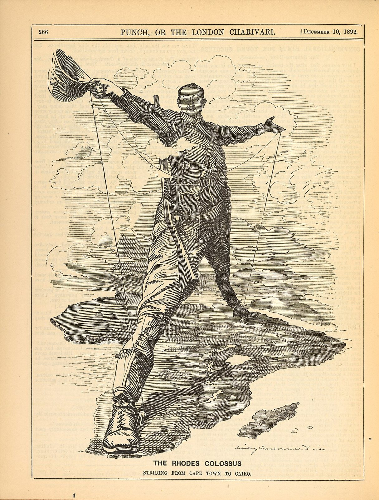
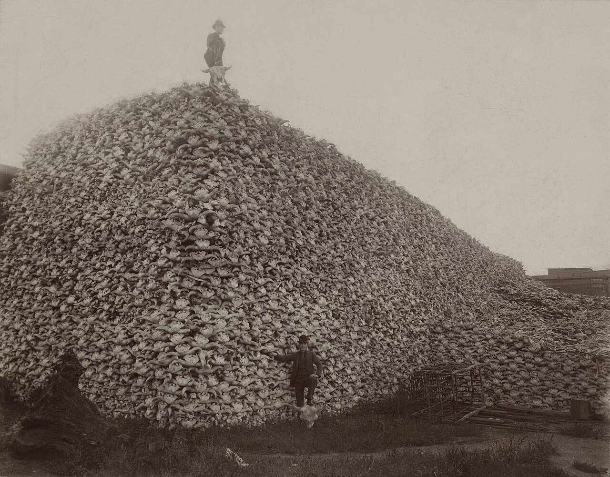

사진 · 펀치의 로즈의 거상 만평
중학교 역사① · 5단원 제국주의와 국민 국가 건설 운동
제국제국주의와 생태환경
린리 샘번, 「로즈의 거상」(『펀치』, 1892) · 퍼블릭 도메인
“제국주의는 땅과 사람,
제국주의는 땅과 사람,
자연을 어떻게 바꾸었을까?
사실식민지와 플랜테이션
해석누구를 위해 바꾸었나
확장오늘까지 남은 흔적
왜 바다 밖으로?
원료고무 · 목화 · 광물
시장남는 상품을 팔 곳
생각사회 진화론 · 인종주의
사진 · 이 만평은
칭찬일까, 비꼼일까?
이 만평은
칭찬일까, 비꼼일까?
누가영국의 풍자 잡지
누구에게영국 독자
사실·주장케이프타운에서 카이로까지
린리 샘번, 「로즈의 거상」(『펀치』, 1892) · 퍼블릭 도메인
1884~1885
사실베를린 회의
해석아프리카 사람 없이 아프리카를 나누다
확장자로 그은 국경
플랜테이션
차인도 아삼 · 실론
고무말레이반도
커피 · 사탕수수자와 · 카리브해

사진 · 이 산은
무엇으로 쌓였을까?
이 산은
무엇으로 쌓였을까?
사실1892년 들소 머리뼈 더미
해석철도와 가죽 공장
확장들소에 기대 살던 사람들
들소 머리뼈 더미(미국 미시간, 1892) · 퍼블릭 도메인
숲에서
철도 침목으로
사실인도의 철도와 숲
해석숲을 나라의 것으로
확장마을 사람들은 숲에 들어갈 수 없었다
함께 건너간 것
사실토끼 · 잡초 · 병
해석오스트레일리아의 토끼
확장생태 제국주의
문명일까,
침략일까?
주장철도와 학교를 세웠다
질문누구를 위한 철도였나
확장식민지 근대화론 논쟁
오늘의
플랜테이션
사실커피 · 초콜릿 · 팜유
해석숲을 벤 자리에 한 작물
확장공정 무역과 인증
“제국주의가 남긴 가장 깊은 상처는 이다.